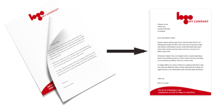

You want your PDF files to look as if they were printed on your letterhead.
This is possible. Use PDF Letterhead Online and Your PDFs look like you printed them on your own stationery.
PDF Letterhead Online adds a background to an existing PDF file. Then the new PDF file looks as if it were printed on your stationery.
Use PDF Letterhead to add letterhead to quotes, contracts, letters, and manuals.